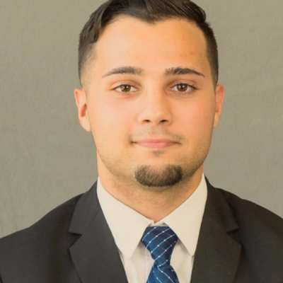

About drnk
About the App
drnk is a cross-platform mobile experience that brings the best deals on alcohol to the fingertips of anyone that touches it. For businesses, it is a free marketing tool that allows for quick outreach and recognition of specials. drnk can take your business to the next level!
History
The drnk mobile apps were birthed out of drnk LLC in Brownsburg, IN. Although the app currently only has businesses in the Ball State area, we are quickly looking to expand to different areas and campuses. If you would like to see the drnk mobile apps in your area, you should contact us today!
The Team
We'd also like to give a big thanks to our team of Ball State seniors who have helped drnk along throughout the year as a part of their senior capstone project! Learn more about them below or click their name to view their LinkedIn profile. Thanks for all of your hard work this year and good luck after graduation!
Faris ShatatFaris Shatat is a passionate mobile developer from Northwest Indiana. Mr. Shatat worked collaboratively with a group of developers to build drnk. Shatat’s primary task was to build the front-end of drnk along with Jake Sulkoske. Faris has done a remarkable job with the development of drnk. Faris’ skillset ranges from building mobile applications to building databases. After graduation Faris hopes to continue working with drnk, LLC while working in Chicago as an Associate Technical Consultant at Perficient, Inc. |
Aaron KingAaron King is a senior student at Ball State University pursuing a bachelor’s degree in computer science. He is ambitious in expanding his knowledge to become a more professional developer. He is a full stack developer for DRNK LLC. He contributed to the front-end, back-end, and robust web service for DRNK LLC. He strives to develop robust software to meet consumers demands in an efficient and timely manner. He plans on working for UnitedHealth Group after graduation in New Jersey. |
Mike BrennanMike Brennan is a senior at Ball State University from Zionsville, Indiana. He has been in charge of the website portal for drnk and helped out with the backend structure and upkeep the past year. Mike specializes in Big Data, Java and Web Development and is starting his career with UnitedHealth Group in Basking Ridge, New Jersey after graduating in May of 2016. |
Jake SulkoskeJake (Thrasher) Sulkoske is an iOS developer on the drnk app. He was born an orphan boy in Indianapolis, Indiana, but was raised by a pack of wolves. He is currently in charge of the design and upkeep of the iOS drnk mobile app. He looks forward to working with drnk in the future! |